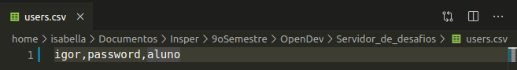
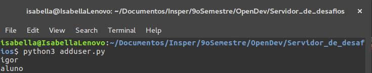
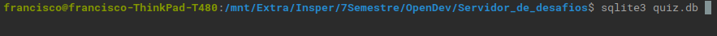
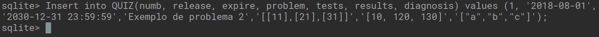

Guia de usuário para professores
Nesta página você encontrará um passo a passo de como adicionar novos usuários e novos desafios ao Servidor de Desafios.
Adicionando usuários
- Para adicionar um novo usuário ao Servidor de Desafios será necessário abrir o arquivo users.csv em um editor de texto e escrever o login do usuário, a senha e o tipo do usuário.
- Os tipos de usuário possíveis são "admin", para usuários que podem fazer qualquer tipo de ação no Servidor de Desafios (como professores) e "aluno" para usuários que tem suas ações restringidas no Servidor de Desafios (como alunos).
- Essas três informações devem estar na mesma linha e devem ser separadas por vírgulas, como mostra a imagem abaixo.

-
Será necessário abrir um terminal na pasta onde se encontram os arquivos do Servidor de Desafios e executar o arquivo adduser.py
python3 adduser.py
O output esperado está na imagem abaixo.

Adicionando desafios
Para adicionar um novo desafio ao Servidor de Desafios será necessário adiciona-lo no banco de dados através do terminal.
- Para isso, abra o terminal no diretório do Servidor de Desafios e execute o comando a seguir:
sqlite3 quiz.db
Como mostra a imagem abaixo.

- Em seguida, no terminal SQLite3, execute o comando abaixo.
Insert into QUIZ(numb, release, expire, problem, tests, results, diagnosis) values ([ numero ], [Data de Inicio],[Data de Expiração],[Exemplo do problema],[Entradas de Teste],[Resultado Esperado],[Diagnóstico para cada entrada]);
Como está exemplificado na imagem abaixo.
